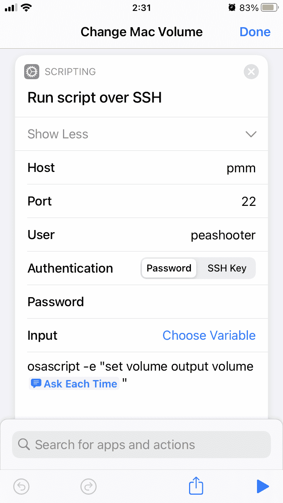
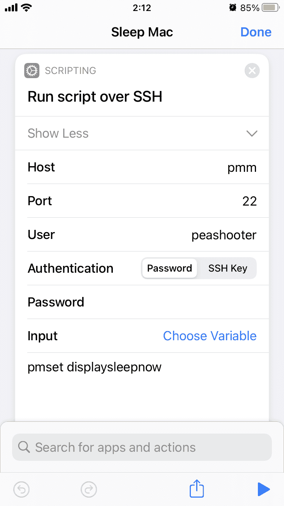
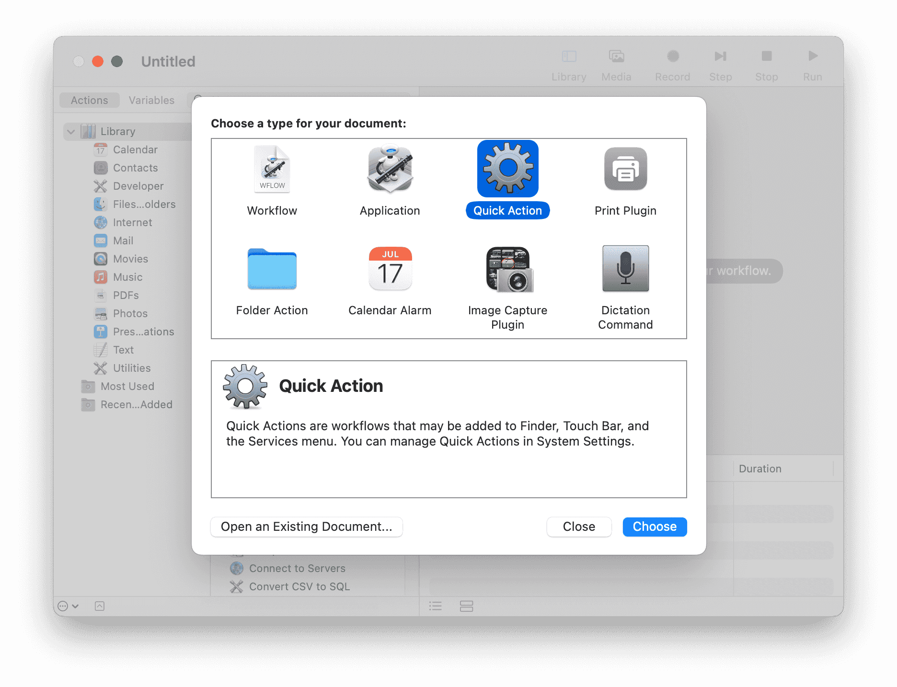
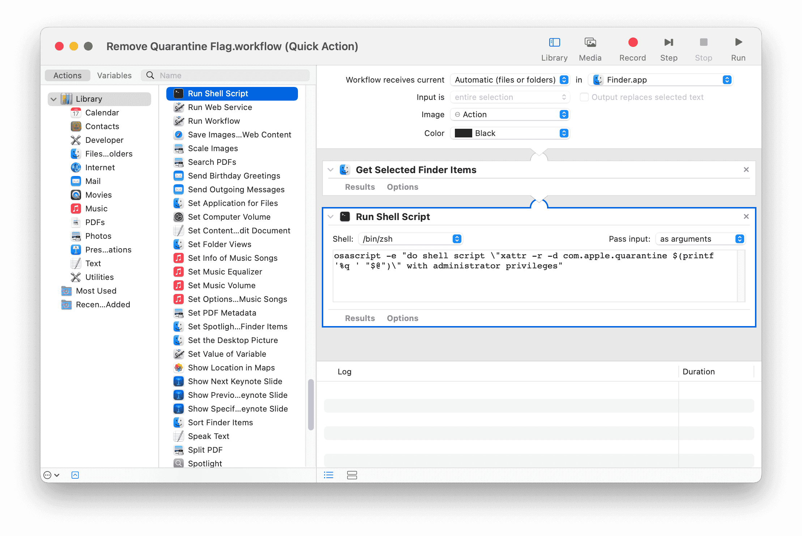
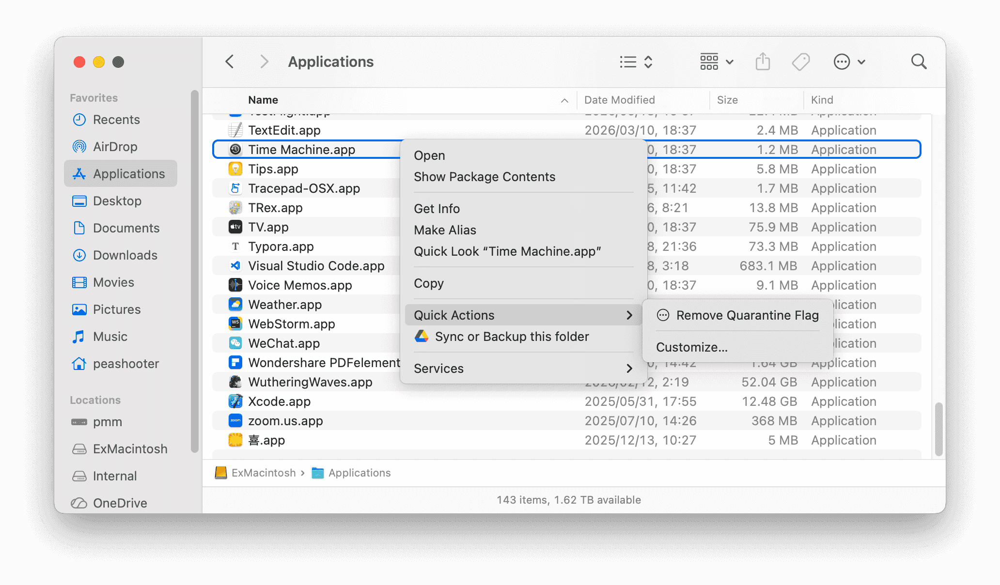
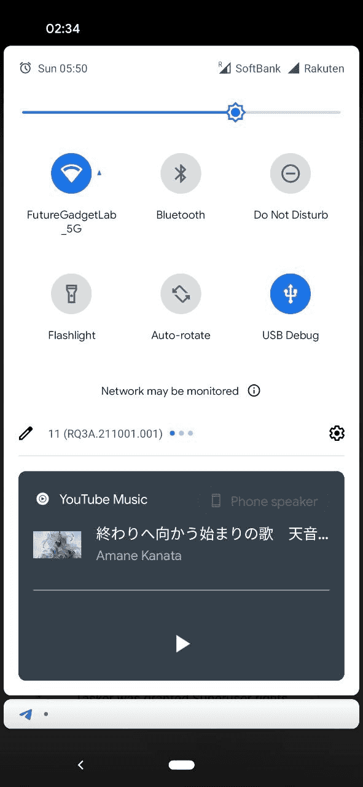
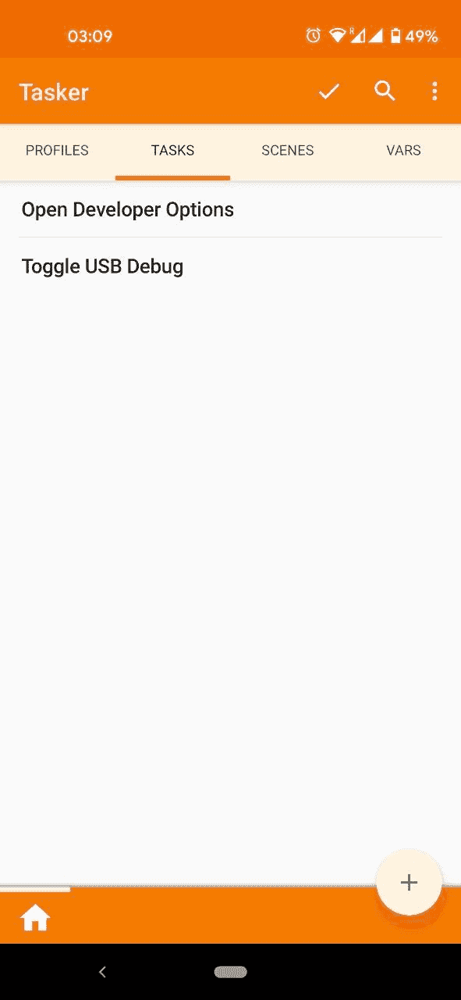
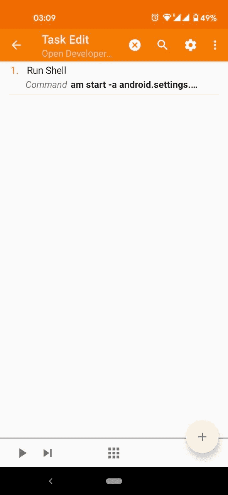
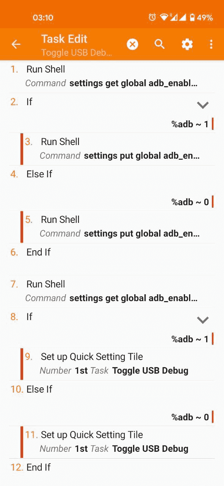

一些自用的快捷方式（？）
记录一些自用的小技巧和快捷方式，防止以后忘记。
目前包括：
- 躺在床上关闭 Mac 显示器
- 快速移除 Gatekeeper 隔离标记
- 在通知栏开关 ADB
1. Shortcuts 调整 Mac 音量 / 关闭显示器
用来躺在床上远程调 Mac 音量和关闭显示器。
调整音量
在Shortcuts中创建：
Run script over SSH
Commandosascript -e "set colume output volume [Ask Each Time]"
关闭显示器
在Shortcuts中创建：
Run script over SSH
Commandpmset displaysleepnow


2. Remove Quarantine Flag
众所周知，mac 遇到签名问题无法运行 App 时，一般执行：
1 | sudo spctl --master-disable |
然后修改：
System Settings → Privacy & Security → Security → Allow applications from → Anywhere
即可运行。
有时候还会遇到 App “is damaged and can’t be opened. You should move it to the Trash.”
这是 Gatekeeper 隔离标记 导致的，使用命令行移除即可解决。
- 只移除 quarantine 标记
1 | xattr -r -d com.apple.quarantine /Applications/xxx.app |
- 移除所有扩展属性
1 | xattr -cr /Applications/xxx.app |
推荐优先使用第一种，第二种会删除所有扩展属性。
加入Finder右键菜单
按照下图，创建一个 Automator / Quick Action：


Workflow receives current
files or foldersinFinder.app
Get Selected Finder Items
Run Shell Script
Pass inputas arguments
Commandosascript -e "do shell script \"xattr -r -d com.apple.quarantine $(printf '%q ' "$@")\" with administrator privileges"
创建后脚本会保存到：
1 | ~/Library/Services/Remove Quarantine Flag.workflow |
并添加到Finder右键菜单：

但是这个脚本不能处理文件名里有空格/中文的文件，使用之前记得把app重命名一下再执行
3. 在通知栏开关ADB（要root）
使用了这三个root命令实现：
1 | am start -a android.settings.APPLICATION_DEVELOPMENT_SETTINGS # 打开开发者设置 |
安装 Tasker
切换到TASKS标签页创建两个Task:
Open Developer OptionsToggle USB Debug
添加完成后手动执行一次Toggle USB Debug，然后就可以去通知栏里添加开关了。




Open Developer Option
Run Shell
Commandam start -a android.settings.APPLICATION_DEVELOPMENT_SETTINGS
Use Root✓
Toggle USB Debug
Run Shell
Commandsettings get global adb_enabled
Use Root✓
Store Optout In%adb
If
%adb ~ 1
Run Shell
Commandsettings put global adb_enabled 0
Use Root✓
Else If
%adb ~ 0
Run Shell
Commandsettings put global adb_enabled 1
Use Root✓
End If
Run Shell
Commandsettings get global adb_enabled
Use Root✓
Store Optout In%adb
If
%adb ~ 1
Set up Quick Setting Tile
Number1st
TaskToggle USB Debug
StatusActive
Long Click TaskOpen Developer Options
Iconandroid.resource://net.dinglisch.android.taskerm/drawable/mw_device_usb
Else If
%adb ~ 0
Set up Quick Setting Tile
Number1st
TaskToggle USB Debug
StatusInctive
Long Click TaskOpen Developer Options
Iconandroid.resource://net.dinglisch.android.taskerm/drawable/mw_device_usb
End If